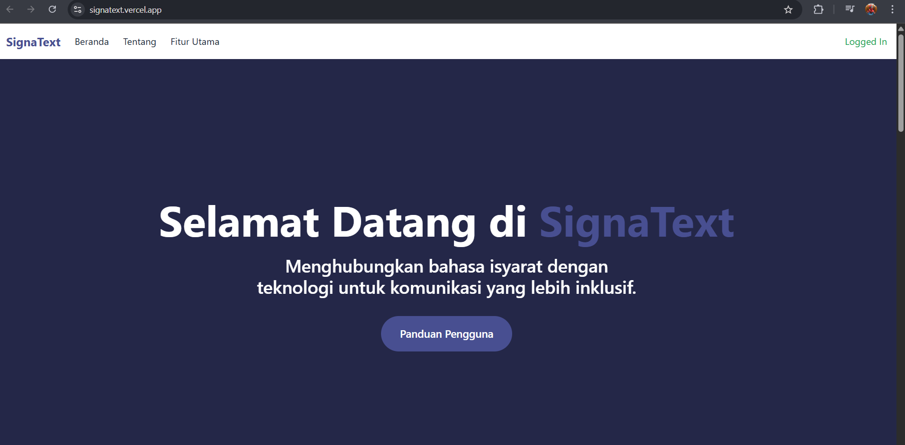
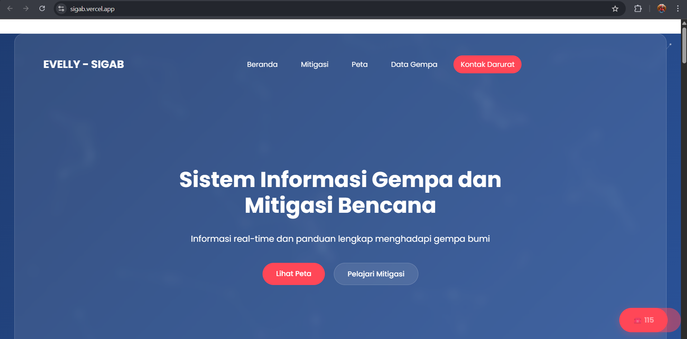
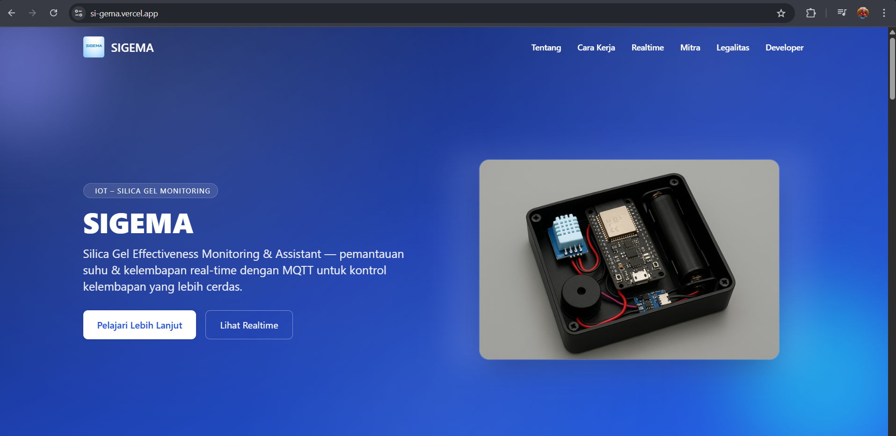
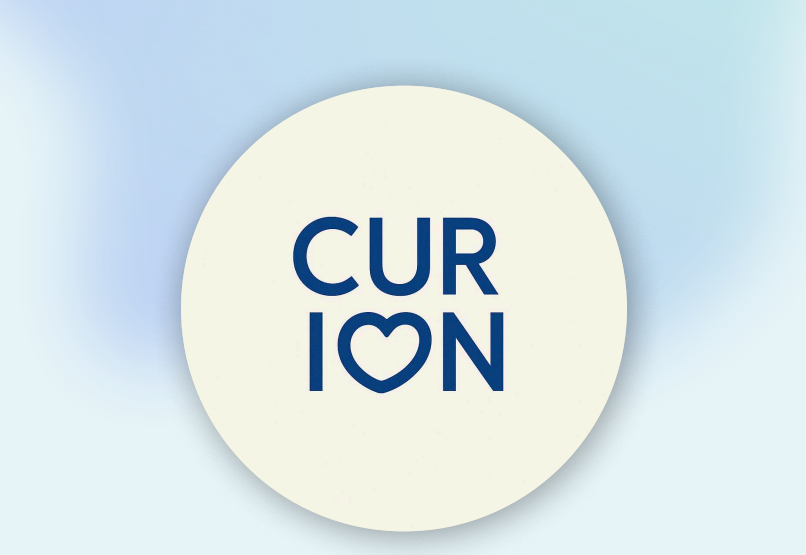
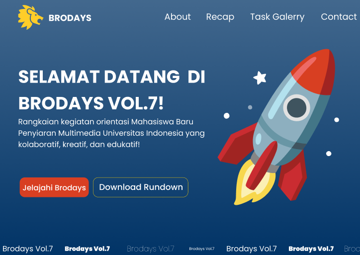

SignaText is a project that combines Website Development and Machine Learning models. In this project, my team and I created SignaText with the goal of helping people with disabilities communicate with the general public. Check out more information on the website.

SIGAB is a website project focused on earthquake mitigation and real-time earthquake information monitoring across Indonesia. It uses APIs from BMKG and BNP to provide up-to-date information and employs Leaflet.js to display map coordinates on the website as a visual representation of the data.


